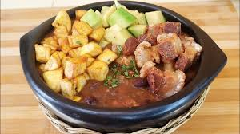
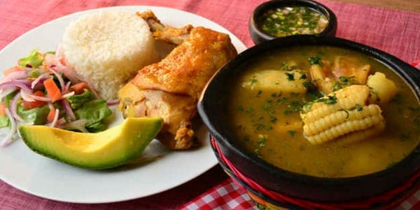

Explora nuestro exquisito menú
atollado
El arroz atollado forma parte de la herencia gastronómica española, aunque se han añadido ingredientes autóctonos. Como pasa con otros platos, existen numerosas variantes con pequeñas diferencias en los ingredientes.

$30.000
frijolada
Si vives en un país con estaciones, es un plato perfecto para los días de invierno y otoño. Este plato se hace tradicionalmente con frijoles, pero también se puede hacer con frijoles pintos. Sin embargo nunca uses frijoles enlatados.Esta es una receta donde los frijoles secos juegan un papel muy importante y también es perfecta para un día lluvioso, servidos con arroz y plátanos maduros fritos.
$25.000
Sancocho
El Sancocho, sin duda, es el plato popular de la cocina del Caribe. Entre sus orígenes parecen estar en las sopas como el Ajiaco Taíno, la Olla Podrida española, y los estofados irlandeses, alemanes, italianos y franceses. Aunque tiene sus variantes: sancocho, salcocho, hervido o ajiaco, su forma de sazonarlo es casi la misma. Se prepara a base de carnes y verduras, especialmente tubérculos.
